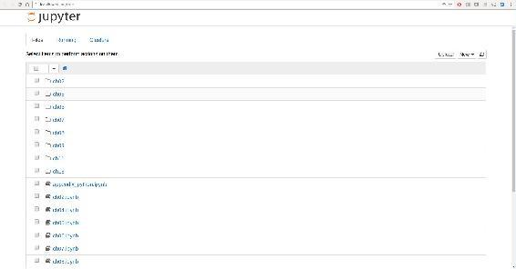
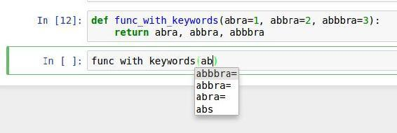
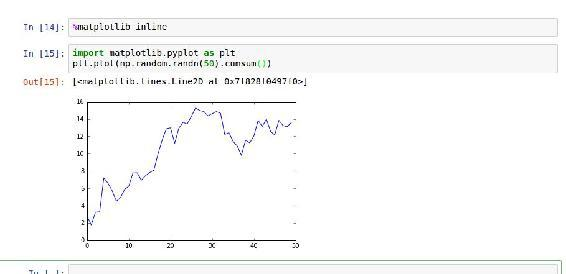

IPython Basics
In this section, we'll get you up and running with the IPython shell and Jupyter notebook, and introduce you to some of the essential concepts.
import os !ls ~/Public/nikola_post/posts/
确定学习ipython的时间.
Running the IPython Shell
You can launch the IPython shell on the command line just like launching the regular Python interpreter except with the ipython command:
$ ipython Python 3.6.0 | packaged by conda-forge | (default, Jan 13 2017, 23:17:12) Type "copyright", "credits" or "license" for more information. IPython 5.1.0 -- An enhanced Interactive Python. ? -> Introduction and overview of IPython's features. %quickref -> Quick reference. help -> Python's own help system. object? -> Details about 'object', use 'object??' for extra details. In [1]: a = 5 In [2]: a Out[2]: 5
You can execute arbitrary Python statements by typing them in and pressing Return (or Enter). When you type just a variable into IPython, it renders a string representation of the object:
In [5]: import numpy as np
In [6]: data = {i : np.random.randn() for i in range(7)}
In [7]: data
Out[7]:
{0: -0.20470765948471295,
1: 0.47894333805754824,
2: -0.5194387150567381,
3: -0.55573030434749,
4: 1.9657805725027142,
5: 1.3934058329729904,
6: 0.09290787674371767}
The first two lines are Python code statements; the second statement creates a variable named data that refers to a newly created Python dictionary. The last line prints the value of data in the console.
Many kinds of Python objects are formatted to be more readable, or pretty-printed, which is distinct from normal printing with print. If you printed the above data variable in the standard Python interpreter, it would be much less readable:
>>> from numpy.random import randn
>>> data = {i : randn() for i in range(7)}
>>> print(data)
{0: -1.5948255432744511, 1: 0.10569006472787983, 2: 1.972367135977295,
3: 0.15455217573074576, 4: -0.24058577449429575, 5: -1.2904897053651216,
6: 0.3308507317325902}
IPython also provides facilities to execute arbitrary blocks of code (via a somewhat glorified copy-and-paste approach) and whole Python scripts. You can also use the Jupyter notebook to work with larger blocks of code, as we'll soon see.
Running the Jupyter Notebook
One of the major components of the Jupyter project is the notebook, a type of interactive document for code, text (with or without markup), data visualizations, and other output. The Jupyter notebook interacts with kernels, which are implementations of the Jupyter interactive computing protocol in any number of programming languages. Python's Jupyter kernel uses the IPython system for its underlying behavior.
To start up Jupyter, run the command jupyter notebook in a terminal:
$ jupyter notebook [I 15:20:52.739 NotebookApp] Serving notebooks from local directory: /home/wesm/code/pydata-book [I 15:20:52.739 NotebookApp] 0 active kernels [I 15:20:52.739 NotebookApp] The Jupyter Notebook is running at: http://localhost:8888/ [I 15:20:52.740 NotebookApp] Use Control-C to stop this server and shut down all kernels (twice to skip confirmation). Created new window in existing browser session.
On many platforms, Jupyter will automatically open up in your default web browser (unless you start it with --no-browser). Otherwise, you can navigate to the HTTP address printed when you started the notebook, here http://localhost:8888/. See Figure 2-1 for what this looks like in Google Chrome.
Note
Many people use Jupyter as a local computing environment, but it can also be deployed on servers and accessed remotely. I won't cover those details here, but encourage you to explore this topic on the internet if it's relevant to your needs.

! ls | grep image
[default]” option. You should see something like Figure 2-2. If this is your first time, try clicking on the empty code “cell” and entering a line of Python code. Then press Shift-Enter to execute it.
When you save the notebook (see “Save and Checkpoint” under the notebook File menu), it creates a file with the extension .ipynb. This is a self-contained file format that contains all of the content (including any evaluated code output) currently in the notebook. These can be loaded and edited by other Jupyter users. To load an existing notebook, put the file in the same directory where you started the notebook process (or in a subfolder within it), then double-click the name from the landing page. You can try it out with the notebooks from my wesm/pydata-book repository on GitHub. See Figure 2-3.
While the Jupyter notebook can feel like a distinct experience from the IPython shell, nearly all of the commands and tools in this chapter can be used in either environment.
Tab Completion
On the surface, the IPython shell looks like a cosmetically different version of the standard terminal Python interpreter (invoked with python). One of the major improvements over the standard Python shell is tab completion, found in many IDEs or other interactive computing analysis environments. While entering expressions in the shell, pressing the Tab key will search the namespace for any variables (objects, functions, etc.) matching the characters you have typed so far:
In [1]: an_apple = 27 In [2]: an_example = 42 In [3]: an<Tab> an_apple and an_example any
In this example, note that IPython displayed both the two variables I defined as well as the Python keyword and and built-in function any. Naturally, you can also complete methods and attributes on any object after typing a period:
In [3]: b = [1, 2, 3] In [4]: b.<Tab> b.append b.count b.insert b.reverse b.clear b.extend b.pop b.sort b.copy b.index b.remove
The same goes for modules:
In [1]: import datetime In [2]: datetime.<Tab> datetime.date datetime.MAXYEAR datetime.timedelta datetime.datetime datetime.MINYEAR datetime.timezone datetime.datetime_CAPI datetime.time datetime.tzinfo
In the Jupyter notebook and newer versions of IPython (5.0 and higher), the autocompletions show up in a drop-down box rather than as text output.
Note
Note that IPython by default hides methods and attributes starting with underscores, such as magic methods and internal “private” methods and attributes, in order to avoid cluttering the display (and confusing novice users!). These, too, can be tab-completed, but you must first type an underscore to see them. If you prefer to always see such methods in tab completion, you can change this setting in the IPython configuration. See the IPython documentation to find out how to do this.
Tab completion works in many contexts outside of searching the interactive namespace and completing object or module attributes. When typing anything that looks like a file path (even in a Python string), pressing the Tab key will complete anything on your computer's filesystem matching what you've typed:
In [7]: datasets/movielens/<Tab> datasets/movielens/movies.dat datasets/movielens/README datasets/movielens/ratings.dat datasets/movielens/users.dat In [7]: path = 'datasets/movielens/<Tab> datasets/movielens/movies.dat datasets/movielens/README datasets/movielens/ratings.dat datasets/movielens/users.dat
Combined with the %run command (see “The %run Command”), this functionality can save you many keystrokes.
Another area where tab completion saves time is in the completion of function keyword arguments (and including the = sign!). See Figure 2-4.

We'll have a closer look at functions in a little bit.
Introspection
Using a question mark (?) before or after a variable will display some general information about the object:
In [8]: b = [1, 2, 3] In [9]: b? Type: list String Form:[1, 2, 3] Length: 3 Docstring: list() -> new empty list list(iterable) -> new list initialized from iterable's items In [10]: print? Docstring: print(value, ..., sep=' ', end='\n', file=sys.stdout, flush=False) Prints the values to a stream, or to sys.stdout by default. Optional keyword arguments: file: a file-like object (stream); defaults to the current sys.stdout. sep: string inserted between values, default a space. end: string appended after the last value, default a newline. flush: whether to forcibly flush the stream. Type: builtin_function_or_method
This is referred to as object introspection. If the object is a function or instance method, the docstring, if defined, will also be shown. Suppose we'd written the following function (which you can reproduce in IPython or Jupyter):
def add_numbers(a, b):
"""
Add two numbers together
Returns
-------
the_sum : type of arguments
"""
return a + b
Then using ? shows us the docstring:
In [11]: add_numbers? Signature: add_numbers(a, b) Docstring: Add two numbers together Returns ------- the_sum : type of arguments File: <ipython-input-9-6a548a216e27> Type: function
Using ?? will also show the function's source code if possible:
In [12]: add_numbers??
Signature: add_numbers(a, b)
Source:
def add_numbers(a, b):
"""
Add two numbers together
Returns
-------
the_sum : type of arguments
"""
return a + b
File: <ipython-input-9-6a548a216e27>
Type: function
? has a final usage, which is for searching the IPython namespace in a manner similar to the standard Unix or Windows command line. A number of characters combined with the wildcard (*) will show all names matching the wildcard expression. For example, we could get a list of all functions in the top-level NumPy namespace containing load:
In [13]: np.*load*? np.__loader__ np.load np.loads np.loadtxt np.pkgload
The %run Command
You can run any file as a Python program inside the environment of your IPython session using the %run command. Suppose you had the following simple script stored in ipython\script\test.py:
def f(x, y, z):
return (x + y) / z
a = 5
b = 6
c = 7.5
result = f(a, b, c)
You can execute this by passing the filename to %run:
In [14]: %run ipython_script_test.py
The script is run in an empty namespace (with no imports or other variables defined) so that the behavior should be identical to running the program on the command line using python script.py. All of the variables (imports, functions, and globals) defined in the file (up until an exception, if any, is raised) will then be accessible in the IPython shell:
In [15]: c Out [15]: 7.5 In [16]: result Out[16]: 1.4666666666666666
If a Python script expects command-line arguments (to be found in sys.argv), these can be passed after the file path as though run on the command line.
Note
Should you wish to give a script access to variables already defined in the interactive IPython namespace, use %run -i instead of plain %run.
In the Jupyter notebook, you may also use the related %load magic function, which imports a script into a code cell:
>>> %load ipython_script_test.py
def f(x, y, z):
return (x + y) / z
a = 5
b = 6
c = 7.5
result = f(a, b, c)
Interrupting running code
Pressing Ctrl-C while any code is running, whether a script through %run or a long-running command, will cause a KeyboardInterrupt to be raised. This will cause nearly all Python programs to stop immediately except in certain unusual cases.
Warning
When a piece of Python code has called into some compiled extension modules, pressing Ctrl-C will not always cause the program execution to stop immediately. In such cases, you will have to either wait until control is returned to the Python interpreter, or in more dire circumstances, forcibly terminate the Python process.
Executing Code from the Clipboard
If you are using the Jupyter notebook, you can copy and paste code into any code cell and execute it. It is also possible to run code from the clipboard in the IPython shell. Suppose you had the following code in some other application:
x = 5
y = 7
if x > 5:
x += 1
y = 8
The most foolproof methods are the %paste and %cpaste magic functions. %paste takes whatever text is in the clipboard and executes it as a single block in the shell:
In [17]: %paste
x = 5
y = 7
if x > 5:
x += 1
y = 8
## -- End pasted text --
%cpaste is similar, except that it gives you a special prompt for pasting code into:
In [18]: %cpaste Pasting code; enter '--' alone on the line to stop or use Ctrl-D. :x = 5 :y = 7 :if x > 5: : x += 1 : : y = 8 :--
With the %cpaste block, you have the freedom to paste as much code as you like before executing it. You might decide to use %cpaste in order to look at the pasted code before executing it. If you accidentally paste the wrong code, you can break out of the %cpaste prompt by pressing Ctrl-C.
Terminal Keyboard Shortcuts
IPython has many keyboard shortcuts for navigating the prompt (which will be familiar to users of the Emacs text editor or the Unix bash shell) and interacting with the shell's command history. Table 2-1 summarizes some of the most commonly used shortcuts. See Figure 2-5 for an illustration of a few of these, such as cursor movement.
Keyboard shortcut |
Description |
|---|---|
Ctrl-P or up-arrow |
Search backward in command history |
Ctrl-N or down-arrow |
Search forward in command history f |
Ctrl-R |
Readline-style reverse history search |
Ctrl-Shift-V |
Paste text from clipboard |
Ctrl-C |
Interrupt currently executing code |
Ctrl-A |
Move cursor to beginning of line |
Ctrl-E |
Move cursor to end of line |
Ctrl-K |
Delete text from cursor until end of line |
Ctrl-U |
Discard all text on current line |
Ctrl-F |
Move cursor forward one character |
Ctrl-B |
Move cursor back one character |
Ctrl-L |
Clear screen |
Note that Jupyter notebooks have a largely separate set of keyboard shortcuts for navigation and editing. Since these shortcuts have evolved more rapidly than IPython's, I encourage you to explore the integrated help system in the Jupyter notebook's menus.
About Magic Commands
IPython's special commands (which are not built into Python itself) are known as “magic” commands. These are designed to facilitate common tasks and enable you to easily control the behavior of the IPython system. A magic command is any command prefixed by the percent symbol %. For example, you can check the execution time of any Python statement, such as a matrix multiplication, using the %timeit magic function (which will be discussed in more detail later):
In [20]: a = np.random.randn(100, 100) In [20]: %timeit np.dot(a, a) 10000 loops, best of 3: 20.9 µs per loop
Magic commands can be viewed as command-line programs to be run within the IPython system. Many of them have additional “command-line” options, which can all be viewed (as you might expect) using ?:
In [21]: %debug?
Docstring:
::
%debug [--breakpoint FILE:LINE] [statement [statement ...]]
Activate the interactive debugger.
This magic command support two ways of activating debugger.
One is to activate debugger before executing code. This way, you
can set a break point, to step through the code from the point.
You can use this mode by giving statements to execute and optionally
a breakpoint.
The other one is to activate debugger in post-mortem mode. You can
activate this mode simply running %debug without any argument.
If an exception has just occurred, this lets you inspect its stack
frames interactively. Note that this will always work only on the last
traceback that occurred, so you must call this quickly after an
exception that you wish to inspect has fired, because if another one
occurs, it clobbers the previous one.
If you want IPython to automatically do this on every exception, see
the %pdb magic for more details.
positional arguments:
statement Code to run in debugger. You can omit this in cell
magic mode.
optional arguments:
--breakpoint <FILE:LINE>, -b <FILE:LINE>
Set break point at LINE in FILE.
Magic functions can be used by default without the percent sign, as long as no variable is defined with the same name as the magic function in question. This feature is called automagic and can be enabled or disabled with %automagic.
Some magic functions behave like Python functions and their output can be assigned to a variable:
In [22]: %pwd Out[22]: '/home/wesm/code/pydata-book In [23]: foo = %pwd In [24]: foo Out[24]: '/home/wesm/code/pydata-book'
Since IPython's documentation is accessible from within the system, I encourage you to explore all of the special commands available by typing %quickref or %magic. Table 2-2 highlights some of the most critical ones for being productive in interactive computing and Python development in IPython.
Command |
Description |
|---|---|
|
Display the IPython Quick Reference Card |
|
Display detailed documentation for all of the available magic commands |
|
Enter the interactive debugger at the bottom of the last exception traceback |
|
Print command input (and optionally output) history |
|
Automatically enter debugger after any exception |
|
Execute preformatted Python code from clipboard |
|
Open a special prompt for manually pasting Python code to be executed |
|
Delete all variables/names defined in interactive namespace |
|
Pretty-print the object and display it through a pager |
|
Run a Python script inside IPython |
|
Execute ``statement`` with |
|
Report the execution time of a single statement |
|
Run a statement multiple times to compute an ensemble average execution time; useful for timing code with very short execution time |
|
Display variables defined in interactive namespace, with varying levels of information/verbosity |
|
Delete a variable and attempt to clear any references to the object in the IPython internals |
Matplotlib Integration
One reason for IPython's popularity in analytical computing is that it integrates well with data visualization and other user interface libraries like matplotlib. Don't worry if you have never used matplotlib before; it will be discussed in more detail later in this book. The %matplotlib magic function configures its integration with the IPython shell or Jupyter notebook. This is important, as otherwise plots you create will either not appear (notebook) or take control of the session until closed (shell).
In the IPython shell, running %matplotlib sets up the integration so you can create multiple plot windows without interfering with the console session:
In [26]: %matplotlib Using matplotlib backend: Qt4Agg
In Jupyter, the command is a little different (Figure 2-6):
In [26]: %matplotlib inline

Advanced IPython System
In Chapter 2 we looked at the basics of using the IPython shell and Jupyter notebook. In this chapter, we explore some deeper functionality in the IPython system that can either be used from the console or within Jupyter.
%bookmark
%prun cProfile,
1 Using the Command History
IPython maintains a small on-disk database containing the text of each command that you execute. This serves various purposes:
Searching, completing, and executing previously executed commands with minimal typing
Persisting the command history between sessions
Logging the input/output history to a file
These features are more useful in the shell than in the notebook, since the notebook by design keeps a log of the input and output in each code cell.
Searching and Reusing the Command History
The IPython shell lets you search and execute previous code or other commands. This is useful, as you may often find yourself repeating the same commands, such as a %run command or some other code snippet. Suppose you had run:
%run first/second/third/data_script.py
and then explored the results of the script (assuming it ran successfully) only to find that you made an incorrect calculation. After figuring out the problem and modifying datascript.py, you can start typing a few letters of the %run command and then press either the Ctrl-P key combination or the up arrow key. This will search the command history for the first prior command matching the letters you typed. Pressing either Ctrl-P or the up arrow key multiple times will continue to search through the history. If you pass over the command you wish to execute, fear not. You can move forward through the command history by pressing either Ctrl-N or the down arrow key. After doing this a few times, you may start pressing these keys without thinking! x# 棒呀, 完全是emacs
Using Ctrl-R gives you the same partial incremental searching capability provided by the readline used in Unix-style shells, such as the bash shell. On Windows, readline functionality is emulated by IPython. To use this, press Ctrl-R and then type a few characters contained in the input line you want to search for:
In [1]: a_command = foo(x, y, z) (reverse-i-search)`com': a_command = foo(x, y, z)
Pressing Ctrl-R will cycle through the history for each line matching the characters you've typed.
Input and Output Variables
Forgetting to assign the result of a function call to a variable can be very annoying. An IPython session stores references to both the input commands and output Python objects in special variables. The previous two outputs are stored in the _ (one underscore) and __ (two underscores) variables, respectively:
In [24]: 2 ** 27 Out[24]: 134217728 In [25]: _ Out[25]: 134217728
Input variables are stored in variables named like _iX, where X is the input line number. For each input variable there is a corresponding output variable _X. So after input line 27, say, there will be two new variables _27 (for the output) and _i27 for the input:
In [26]: foo = 'bar' In [27]: foo Out[27]: 'bar' In [28]: _i27 Out[28]: u'foo' In [29]: _27 Out[29]: 'bar'
Since the input variables are strings they can be executed again with the Python exec keyword:
In [30]: exec(_i27)
Here _i27 refers to the code input in In [27].
Several magic functions allow you to work with the input and output history. %hist is capable of printing all or part of the input history, with or without line numbers. %reset is for clearing the interactive namespace and optionally the input and output caches. The %xdel magic function is intended for removing all references to a particular object from the IPython machinery. See the documentation for both of these magics for more details.
Warning
When working with very large datasets, keep in mind that IPython's input and output history causes any object referenced there to not be garbage-collected (freeing up the memory), even if you delete the variables from the interactive namespace using the del keyword. In such cases, careful usage of %xdel and %reset can help you avoid running into memory problems.
2 Interacting with the Operating System
Another feature of IPython is that it allows you to seamlessly access the filesystem and operating system shell. This means, among other things, that you can perform most standard command-line actions as you would in the Windows or Unix (Linux, macOS) shell without having to exit IPython. This includes shell commands, changing directories, and storing the results of a command in a Python object (list or string). There are also simple command aliasing and directory bookmarking features.
See Table B-1 for a summary of magic functions and syntax for calling shell commands. I'll briefly visit these features in the next few sections.
Command |
Description |
|---|---|
|
Execute |
|
Run |
|
Define an alias for a system (shell) command |
|
Utilize IPython's directory bookmarking system |
|
Change system working directory to passed directory |
|
Return the current system working directory |
|
Place current directory on stack and change to target directory |
|
Change to directory popped off the top of the stack |
|
Return a list containing the current directory stack |
|
Print the history of visited directories |
|
Return the system environment variables as a dict |
|
Configure matplotlib integration options |
Shell Commands and Aliases
Starting a line in IPython with an exclamation point !, or bang, tells IPython to execute everything after the bang in the system shell. This means that you can delete files (using rm or del, depending on your OS), change directories, or execute any other process.
You can store the console output of a shell command in a variable by assigning the expression escaped with ! to a variable. For example, on my Linux-based machine connected to the internet via ethernet, I can get my IP address as a Python variable:
ip_info = !ifconfig |grep "inet" print(ip_info[0].strip())
The returned Python object ip_info is actually a custom list type containing various versions of the console output.
IPython can also substitute in Python values defined in the current environment when using !. To do this, preface the variable name by the dollar sign $:
foo = '*python*' !ls $foo
The %alias magic function can define custom shortcuts for shell commands. As a simple example:
In [1]: %alias ll ls -l In [2]: ll /usr total 332 drwxr-xr-x 2 root root 69632 2012-01-29 20:36 bin/ drwxr-xr-x 2 root root 4096 2010-08-23 12:05 games/ drwxr-xr-x 123 root root 20480 2011-12-26 18:08 include/ drwxr-xr-x 265 root root 126976 2012-01-29 20:36 lib/ drwxr-xr-x 44 root root 69632 2011-12-26 18:08 lib32/ lrwxrwxrwx 1 root root 3 2010-08-23 16:02 lib64 -> lib/ drwxr-xr-x 15 root root 4096 2011-10-13 19:03 local/ drwxr-xr-x 2 root root 12288 2012-01-12 09:32 sbin/ drwxr-xr-x 387 root root 12288 2011-11-04 22:53 share/ drwxrwsr-x 24 root src 4096 2011-07-17 18:38 src/
You can execute multiple commands just as on the command line by separating them with semicolons:
In [558]: %alias test_alias (cd examples; ls; cd ..) In [559]: test_alias macrodata.csv spx.csv tips.csv
You'll notice that IPython “forgets” any aliases you define interactively as soon as the session is closed. To create permanent aliases, you will need to use the configuration system.
Directory Bookmark System
IPython has a simple directory bookmarking system to enable you to save aliases for common directories so that you can jump around very easily. For example, suppose you wanted to create a bookmark that points to the supplementary materials for this book:
%bookmark py4da /home/wesm/code/pydata-book
Once you've done this, when we use the %cd magic, we can use any bookmarks we've defined:
In [7]: cd py4da (bookmark:py4da) -> /home/wesm/code/pydata-book /home/wesm/code/pydata-book
If a bookmark name conflicts with a directory name in your current working directory, you can use the -b flag to override and use the bookmark location. Using the -l option with %bookmark lists all of your bookmarks:
In [8]: %bookmark -l Current bookmarks: py4da -> /home/wesm/code/pydata-book-source
Bookmarks, unlike aliases, are automatically persisted between IPython sessions.
3 Software Development Tools
In addition to being a comfortable environment for interactive computing and data exploration, IPython can also be a useful companion for general Python software development. In data analysis applications, it's important first to have correct code. Fortunately, IPython has closely integrated and enhanced the built-in Python pdb debugger. Secondly you want your code to be fast. For this IPython has easy-to-use code timing and profiling tools. I will give an overview of these tools in detail here.
Interactive Debugger
IPython's debugger enhances pdb with tab completion, syntax highlighting, and context for each line in exception tracebacks. One of the best times to debug code is right after an error has occurred. The %debug command, when entered immediately after an exception, invokes the “post-mortem” debugger and drops you into the stack frame where the exception was raised:
In [2]: run examples/ipython_bug.py
---------------------------------------------------------------------------
AssertionError Traceback (most recent call last)
/home/wesm/code/pydata-book/examples/ipython_bug.py in <module>()
13 throws_an_exception()
14
---> 15 calling_things()
/home/wesm/code/pydata-book/examples/ipython_bug.py in calling_things()
11 def calling_things():
12 works_fine()
---> 13 throws_an_exception()
14
15 calling_things()
/home/wesm/code/pydata-book/examples/ipython_bug.py in throws_an_exception()
7 a = 5
8 b = 6
----> 9 assert(a + b == 10)
10
11 def calling_things():
AssertionError:
In [3]: %debug
> /home/wesm/code/pydata-book/examples/ipython_bug.py(9)throws_an_exception()
8 b = 6
----> 9 assert(a + b == 10)
10
ipdb>
Once inside the debugger, you can execute arbitrary Python code and explore all of the objects and data (which have been “kept alive” by the interpreter) inside each stack frame. By default you start in the lowest level, where the error occurred. By pressing u (up) and d (down), you can switch between the levels of the stack trace:
ipdb> u
> /home/wesm/code/pydata-book/examples/ipython_bug.py(13)calling_things()
12 works_fine()
---> 13 throws_an_exception()
14
Executing the %pdb command makes it so that IPython automatically invokes the debugger after any exception, a mode that many users will find especially useful.
It's also easy to use the debugger to help develop code, especially when you wish to set breakpoints or step through the execution of a function or script to examine the state at each stage. There are several ways to accomplish this. The first is by using %run with the -d flag, which invokes the debugger before executing any code in the passed script. You must immediately press s (step) to enter the script:
In [5]: run -d examples/ipython_bug.py
Breakpoint 1 at /home/wesm/code/pydata-book/examples/ipython_bug.py:1
NOTE: Enter 'c' at the ipdb> prompt to start your script.
> <string>(1)<module>()
ipdb> s
--Call--
> /home/wesm/code/pydata-book/examples/ipython_bug.py(1)<module>()
1---> 1 def works_fine():
2 a = 5
3 b = 6
After this point, it's up to you how you want to work your way through the file. For example, in the preceding exception, we could set a breakpoint right before calling the works_fine method and run the script until we reach the breakpoint by pressing c (continue):
ipdb> b 12
ipdb> c
> /home/wesm/code/pydata-book/examples/ipython_bug.py(12)calling_things()
11 def calling_things():
2--> 12 works_fine()
13 throws_an_exception()
At this point, you can step into works_fine() or execute works_fine() by pressing n (next) to advance to the next line:
ipdb> n
> /home/wesm/code/pydata-book/examples/ipython_bug.py(13)calling_things()
2 12 works_fine()
---> 13 throws_an_exception()
14
Then, we could step into throws_an_exception and advance to the line where the error occurs and look at the variables in the scope. Note that debugger commands take precedence over variable names; in such cases, preface the variables with ! to examine their contents:
ipdb> s
--Call--
> /home/wesm/code/pydata-book/examples/ipython_bug.py(6)throws_an_exception()
5
----> 6 def throws_an_exception():
7 a = 5
ipdb> n
> /home/wesm/code/pydata-book/examples/ipython_bug.py(7)throws_an_exception()
6 def throws_an_exception():
----> 7 a = 5
8 b = 6
ipdb> n
> /home/wesm/code/pydata-book/examples/ipython_bug.py(8)throws_an_exception()
7 a = 5
----> 8 b = 6
9 assert(a + b == 10)
ipdb> n
> /home/wesm/code/pydata-book/examples/ipython_bug.py(9)throws_an_exception()
8 b = 6
----> 9 assert(a + b == 10)
10
ipdb> !a
5
ipdb> !b
6
Developing proficiency with the interactive debugger is largely a matter of practice and experience. See Table B-2 for a full catalog of the debugger commands. If you are accustomed to using an IDE, you might find the terminal-driven debugger to be a bit unforgiving at first, but that will improve in time. Some of the Python IDEs have excellent GUI debuggers, so most users can find something that works for them.
Command |
Action |
|---|---|
|
Display command list |
|
Show documentation for ``command`` |
|
Resume program execution |
|
Exit debugger without executing any more code |
|
Set breakpoint at ``number`` in current file |
|
Set breakpoint at line ``number`` in specified file |
|
Step into function call |
|
Execute current line and advance to next line at current level |
|
Move up/down in function call stack |
|
Show arguments for current function |
|
Invoke statement ``statement`` in new (recursive) debugger |
|
Show current position and context at current level of stack |
|
Print full stack trace with context at current position |
Other ways to make use of the debugger
There are a couple of other useful ways to invoke the debugger. The first is by using a special set_trace function (named after pdb.set_trace), which is basically a “poor man's breakpoint.” Here are two small recipes you might want to put somewhere for your general use (potentially adding them to your IPython profile as I do):
from IPython.core.debugger import Pdb
def set_trace():
Pdb(color_scheme='Linux').set_trace(sys._getframe().f_back)
def debug(f, *args, **kwargs):
pdb = Pdb(color_scheme='Linux')
return pdb.runcall(f, *args, **kwargs)
The first function, set_trace, is very simple. You can use a set_trace in any part of your code that you want to temporarily stop in order to more closely examine it (e.g., right before an exception occurs):
In [7]: run examples/ipython_bug.py
> /home/wesm/code/pydata-book/examples/ipython_bug.py(16)calling_things()
15 set_trace()
---> 16 throws_an_exception()
17
Pressing c (continue) will cause the code to resume normally with no harm done.
The debug function we just looked at enables you to invoke the interactive debugger easily on an arbitrary function call. Suppose we had written a function like the following and we wished to step through its logic:
def f(x, y, z=1):
tmp = x + y
return tmp / z
Ordinarily using f would look like f(1, 2, z=3). To instead step into f, pass f as the first argument to debug followed by the positional and keyword arguments to be passed to f:
In [6]: debug(f, 1, 2, z=3)
> <ipython-input>(2)f()
1 def f(x, y, z):
----> 2 tmp = x + y
3 return tmp / z
ipdb>
I find that these two simple recipes save me a lot of time on a day-to-day basis.
Lastly, the debugger can be used in conjunction with %run. By running a script with %run -d, you will be dropped directly into the debugger, ready to set any breakpoints and start the script:
In [1]: %run -d examples/ipython_bug.py Breakpoint 1 at /home/wesm/code/pydata-book/examples/ipython_bug.py:1 NOTE: Enter 'c' at the ipdb> prompt to start your script. > <string>(1)<module>() ipdb>
Adding -b with a line number starts the debugger with a breakpoint set already:
In [2]: %run -d -b2 examples/ipython_bug.py
Breakpoint 1 at /home/wesm/code/pydata-book/examples/ipython_bug.py:2
NOTE: Enter 'c' at the ipdb> prompt to start your script.
> <string>(1)<module>()
ipdb> c
> /home/wesm/code/pydata-book/examples/ipython_bug.py(2)works_fine()
1 def works_fine():
1---> 2 a = 5
3 b = 6
ipdb>
Timing Code: %time and %timeit
For larger-scale or longer-running data analysis applications, you may wish to measure the execution time of various components or of individual statements or function calls. You may want a report of which functions are taking up the most time in a complex process. Fortunately, IPython enables you to get this information very easily while you are developing and testing your code.
Timing code by hand using the built-in time module and its functions time.clock and time.time is often tedious and repetitive, as you must write the same uninteresting boilerplate code:
import time
start = time.time()
for i in range(iterations):
# some code to run here
elapsed_per = (time.time() - start) / iterations
Since this is such a common operation, IPython has two magic functions, %time and %timeit, to automate this process for you.
%time runs a statement once, reporting the total execution time. Suppose we had a large list of strings and we wanted to compare different methods of selecting all strings starting with a particular prefix. Here is a simple list of 600,000 strings and two identical methods of selecting only the ones that start with 'foo':
# a very large list of strings
strings = ['foo', 'foobar', 'baz', 'qux',
'python', 'Guido Van Rossum'] * 100000
method1 = [x for x in strings if x.startswith('foo')]
method2 = [x for x in strings if x[:3] == 'foo']
It looks like they should be about the same performance-wise, right? We can check for sure using %time:
In [561]: %time method1 = [x for x in strings if x.startswith('foo')]
CPU times: user 0.19 s, sys: 0.00 s, total: 0.19 s
Wall time: 0.19 s
In [562]: %time method2 = [x for x in strings if x[:3] == 'foo']
CPU times: user 0.09 s, sys: 0.00 s, total: 0.09 s
Wall time: 0.09 s
The Wall time (short for “wall-clock time”) is the main number of interest. So, it looks like the first method takes more than twice as long, but it's not a very precise measurement. If you try %time-ing those statements multiple times yourself, you'll find that the results are somewhat variable. To get a more precise measurement, use the %timeit magic function. Given an arbitrary statement, it has a heuristic to run a statement multiple times to produce a more accurate average runtime:
In [563]: %timeit [x for x in strings if x.startswith('foo')]
10 loops, best of 3: 159 ms per loop
In [564]: %timeit [x for x in strings if x[:3] == 'foo']
10 loops, best of 3: 59.3 ms per loop
This seemingly innocuous example illustrates that it is worth understanding the performance characteristics of the Python standard library, NumPy, pandas, and other libraries used in this book. In larger-scale data analysis applications, those milliseconds will start to add up!
%timeit is especially useful for analyzing statements and functions with very short execution times, even at the level of microseconds (millionths of a second) or nanoseconds (billionths of a second). These may seem like insignificant amounts of time, but of course a 20 microsecond function invoked 1 million times takes 15 seconds longer than a 5 microsecond function. In the preceding example, we could very directly compare the two string operations to understand their performance characteristics:
In [565]: x = 'foobar' In [566]: y = 'foo' In [567]: %timeit x.startswith(y) 1000000 loops, best of 3: 267 ns per loop In [568]: %timeit x[:3] == y 10000000 loops, best of 3: 147 ns per loop
Basic Profiling: %prun and %run -p
Profiling code is closely related to timing code, except it is concerned with determining where time is spent. The main Python profiling tool is the cProfile module, which is not specific to IPython at all. cProfile executes a program or any arbitrary block of code while keeping track of how much time is spent in each function.
A common way to use cProfile is on the command line, running an entire program and outputting the aggregated time per function. Suppose we had a simple script that does some linear algebra in a loop (computing the maximum absolute eigenvalues of a series of 100 × 100 matrices):
import numpy as np from numpy.linalg import eigvals def run_experiment(niter=100): K = 100 results = [] for _ in range(niter): mat = np.random.randn(K, K) max_eigenvalue = np.abs(eigvals(mat)).max() results.append(max_eigenvalue) return results some_results = run_experiment() print('Largest one we saw: %s' % np.max(some_results))
Largest one we saw: 12.066641847130507
# python -m cProfile $fp echo $fp
You can run this script through cProfile using the following in the command line:
python -m cProfile cprof_example.py
If you try that, you'll find that the output is sorted by function name. This makes it a bit hard to get an idea of where the most time is spent, so it's very common to specify a sort order using the -s flag:
$ python -m cProfile -s cumulative cprof_example.py
Largest one we saw: 11.923204422
15116 function calls (14927 primitive calls) in 0.720 seconds
Ordered by: cumulative time
ncalls tottime percall cumtime percall filename:lineno(function)
1 0.001 0.001 0.721 0.721 cprof_example.py:1(<module>)
100 0.003 0.000 0.586 0.006 linalg.py:702(eigvals)
200 0.572 0.003 0.572 0.003 {numpy.linalg.lapack_lite.dgeev}
1 0.002 0.002 0.075 0.075 __init__.py:106(<module>)
100 0.059 0.001 0.059 0.001 {method 'randn')
1 0.000 0.000 0.044 0.044 add_newdocs.py:9(<module>)
2 0.001 0.001 0.037 0.019 __init__.py:1(<module>)
2 0.003 0.002 0.030 0.015 __init__.py:2(<module>)
1 0.000 0.000 0.030 0.030 type_check.py:3(<module>)
1 0.001 0.001 0.021 0.021 __init__.py:15(<module>)
1 0.013 0.013 0.013 0.013 numeric.py:1(<module>)
1 0.000 0.000 0.009 0.009 __init__.py:6(<module>)
1 0.001 0.001 0.008 0.008 __init__.py:45(<module>)
262 0.005 0.000 0.007 0.000 function_base.py:3178(add_newdoc)
100 0.003 0.000 0.005 0.000 linalg.py:162(_assertFinite)
...
Only the first 15 rows of the output are shown. It's easiest to read by scanning down the cumtime column to see how much total time was spent inside each function. Note that if a function calls some other function, the clock does not stop running. cProfile records the start and end time of each function call and uses that to produce the timing.
In addition to the command-line usage, cProfile can also be used programmatically to profile arbitrary blocks of code without having to run a new process. IPython has a convenient interface to this capability using the %prun command and the -p option to %run. %prun takes the same “command-line options” as cProfile but will profile an arbitrary Python statement instead of a whole .py file:
%time run_experiment()
%prun -l 7 -s cumulative run_experiment()
In [4]:
4203 function calls in 0.643 seconds
Ordered by: cumulative time
List reduced from 32 to 7 due to restriction <7>
ncalls tottime percall cumtime percall filename:lineno(function)
1 0.000 0.000 0.643 0.643 <string>:1(<module>)
1 0.001 0.001 0.643 0.643 cprof_example.py:4(run_experiment)
100 0.003 0.000 0.583 0.006 linalg.py:702(eigvals)
200 0.569 0.003 0.569 0.003 {numpy.linalg.lapack_lite.dgeev}
100 0.058 0.001 0.058 0.001 {method 'randn'}
100 0.003 0.000 0.005 0.000 linalg.py:162(_assertFinite)
200 0.002 0.000 0.002 0.000 {method 'all' of 'numpy.ndarray'}
Similarly, calling %run -p -s cumulative cprof_example.py has the same effect as the command-line approach, except you never have to leave IPython.
In the Jupyter notebook, you can use the %%prun magic (two % signs) to profile an entire code block. This pops up a separate window with the profile output. This can be useful in getting possibly quick answers to questions like, “Why did that code block take so long to run?”
There are other tools available that help make profiles easier to understand when you are using IPython or Jupyter. One of these is SnakeViz, which produces an interactive visualization of the profile results using d3.js.
Profiling a Function Line by Line
In some cases the information you obtain from %prun (or another cProfile-based profile method) may not tell the whole story about a function's execution time, or it may be so complex that the results, aggregated by function name, are hard to interpret. For this case, there is a small library called line_profiler (obtainable via PyPI or one of the package management tools). It contains an IPython extension enabling a new magic function %lprun that computes a line-by-line-profiling of one or more functions. You can enable this extension by modifying your IPython configuration (see the IPython documentation or the section on configuration later in this chapter) to include the following line:
# A list of dotted module names of IPython extensions to load. c.TerminalIPythonApp.extensions = ['line_profiler']
You can also run the command:
%load_ext line_profiler
line_profiler can be used programmatically (see the full documentation), but it is perhaps most powerful when used interactively in IPython. Suppose you had a module prof_mod with the following code doing some NumPy array operations:
%load_ext line_profiler from numpy.random import randn def add_and_sum(x, y): added = x + y summed = added.sum(axis=1) return summed def call_function(): x = randn(1000, 1000) y = randn(1000, 1000) return add_and_sum(x, y)
If we wanted to understand the performance of the add_and_sum function, %prun gives us the following:
In [569]: %run prof_mod
In [570]: x = randn(3000, 3000)
In [571]: y = randn(3000, 3000)
In [572]: %prun add_and_sum(x, y)
4 function calls in 0.049 seconds
Ordered by: internal time
ncalls tottime percall cumtime percall filename:lineno(function)
1 0.036 0.036 0.046 0.046 prof_mod.py:3(add_and_sum)
1 0.009 0.009 0.009 0.009 {method 'sum' of 'numpy.ndarray'}
1 0.003 0.003 0.049 0.049 <string>:1(<module>)
This is not especially enlightening. With the line_profiler IPython extension activated, a new command %lprun is available. The only difference in usage is that we must instruct %lprun which function or functions we wish to profile. The general syntax is:
%lprun -f func1 -f func2 statement_to_profile
In this case, we want to profile add_and_sum, so we run:
In [573]: %lprun -f add_and_sum add_and_sum(x, y)
Timer unit: 1e-06 s
File: prof_mod.py
Function: add_and_sum at line 3
Total time: 0.045936 s
Line # Hits Time Per Hit % Time Line Contents
==============================================================
3 def add_and_sum(x, y):
4 1 36510 36510.0 79.5 added = x + y
5 1 9425 9425.0 20.5 summed = added.sum(axis=1)
6 1 1 1.0 0.0 return summed
This can be much easier to interpret. In this case we profiled the same function we used in the statement. Looking at the preceding module code, we could call call_function and profile that as well as add_and_sum, thus getting a full picture of the performance of the code:
In [574]: %lprun -f add_and_sum -f call_function call_function()
Timer unit: 1e-06 s
File: prof_mod.py
Function: add_and_sum at line 3
Total time: 0.005526 s
Line # Hits Time Per Hit % Time Line Contents
==============================================================
3 def add_and_sum(x, y):
4 1 4375 4375.0 79.2 added = x + y
5 1 1149 1149.0 20.8 summed = added.sum(axis=1)
6 1 2 2.0 0.0 return summed
File: prof_mod.py
Function: call_function at line 8
Total time: 0.121016 s
Line # Hits Time Per Hit % Time Line Contents
==============================================================
8 def call_function():
9 1 57169 57169.0 47.2 x = randn(1000, 1000)
10 1 58304 58304.0 48.2 y = randn(1000, 1000)
11 1 5543 5543.0 4.6 return add_and_sum(x, y)
As a general rule of thumb, I tend to prefer %prun (cProfile) for “macro” profiling and %lprun (line_profiler) for “micro” profiling. It's worthwhile to have a good understanding of both tools.
Note
The reason that you must explicitly specify the names of the functions you want to profile with %lprun is that the overhead of “tracing” the execution time of each line is substantial. Tracing functions that are not of interest has the potential to significantly alter the profile results.
4 Tips for Productive Code Development Using IPython
Writing code in a way that makes it easy to develop, debug, and ultimately use interactively may be a paradigm shift for many users. There are procedural details like code reloading that may require some adjustment as well as coding style concerns.
Therefore, implementing most of the strategies described in this section is more of an art than a science and will require some experimentation on your part to determine a way to write your Python code that is effective for you. Ultimately you want to structure your code in a way that makes it easy to use iteratively and to be able to explore the results of running a program or function as effortlessly as possible. I have found software designed with IPython in mind to be easier to work with than code intended only to be run as as standalone command-line application. This becomes especially important when something goes wrong and you have to diagnose an error in code that you or someone else might have written months or years beforehand.
Reloading Module Dependencies
In Python, when you type import some_lib, the code in some_lib is executed and all the variables, functions, and imports defined within are stored in the newly created some_lib module namespace. The next time you type import some_lib, you will get a reference to the existing module namespace. The potential difficulty in interactive IPython code development comes when you, say, %run a script that depends on some other module where you may have made changes. Suppose I had the following code in testscript.py:
import some_lib x = 5 y = [1, 2, 3, 4] result = some_lib.get_answer(x, y)
If you were to execute %run test_script.py then modify somelib.py, the next time you execute %run test_script.py you will still get the old version of somelib.py because of Python's “load-once” module system. This behavior differs from some other data analysis environments, like MATLAB, which automatically propagate code changes.To cope with this, you have a couple of options. The first way is to use the reload function in the importlib module in the standard library:
import some_lib import importlib importlib.reload(some_lib)
This guarantees that you will get a fresh copy of somelib.py every time you run testscript.py. Obviously, if the dependencies go deeper, it might be a bit tricky to be inserting usages of reload all over the place. For this problem, IPython has a special dreload function (not a magic function) for “deep” (recursive) reloading of modules. If I were to run somelib.py then type dreload(some_lib), it will attempt to reload some_lib as well as all of its dependencies. This will not work in all cases, unfortunately, but when it does it beats having to restart IPython.
Code Design Tips
There's no simple recipe for this, but here are some high-level principles I have found effective in my own work.
Keep relevant objects and data alive
It's not unusual to see a program written for the command line with a structure somewhat like the following trivial example:
# from my_functions import g def f(x, y): return g(x + y) def main(): x = 6 y = 7.5 result = x + y if __name__ == '__main__': main()
Do you see what might go wrong if we were to run this program in IPython? After it's done, none of the results or objects defined in the main function will be accessible in the IPython shell. A better way is to have whatever code is in main execute directly in the module's global namespace (or in the if __name__ = 'main':= block, if you want the module to also be importable). That way, when you %run the code, you'll be able to look at all of the variables defined in main. This is equivalent to defining top-level variables in cells in the Jupyter notebook.
Flat is better than nested
Deeply nested code makes me think about the many layers of an onion. When testing or debugging a function, how many layers of the onion must you peel back in order to reach the code of interest? The idea that “flat is better than nested” is a part of the Zen of Python, and it applies generally to developing code for interactive use as well. Making functions and classes as decoupled and modular as possible makes them easier to test (if you are writing unit tests), debug, and use interactively.
Overcome a fear of longer files
If you come from a Java (or another such language) background, you may have been told to keep files short. In many languages, this is sound advice; long length is usually a bad “code smell,” indicating refactoring or reorganization may be necessary. However, while developing code using IPython, working with 10 small but interconnected files (under, say, 100 lines each) is likely to cause you more headaches in general than two or three longer files. Fewer files means fewer modules to reload and less jumping between files while editing, too. I have found maintaining larger modules, each with high internal cohesion, to be much more useful and Pythonic. After iterating toward a solution, it sometimes will make sense to refactor larger files into smaller ones.
Obviously, I don't support taking this argument to the extreme, which would to be to put all of your code in a single monstrous file. Finding a sensible and intuitive module and package structure for a large codebase often takes a bit of work, but it is especially important to get right in teams. Each module should be internally cohesive, and it should be as obvious as possible where to find functions and classes responsible for each area of functionality.
5 Advanced IPython Features
Making full use of the IPython system may lead you to write your code in a slightly different way, or to dig into the configuration.
Making Your Own Classes IPython-Friendly
IPython makes every effort to display a console-friendly string representation of any object that you inspect. For many objects, like dicts, lists, and tuples, the built-in pprint module is used to do the nice formatting. In user-defined classes, however, you have to generate the desired string output yourself. Suppose we had the following simple class:
class Message:
def __init__(self, msg):
self.msg = msg
If you wrote this, you would be disappointed to discover that the default output for your class isn't very nice:
In [576]: x = Message('I have a secret')
In [577]: x
Out[577]: <__main__.Message instance at 0x60ebbd8>
IPython takes the string returned by the __repr__ magic method (by doing output = repr(obj)) and prints that to the console. Thus, we can add a simple __repr__ method to the preceding class to get a more helpful output:
class Message:
def __init__(self, msg):
self.msg = msg
def __repr__(self):
return 'Message: %s' % self.msg
In [579]: x = Message('I have a secret')
In [580]: x
Out[580]: Message: I have a secret
Profiles and Configuration
Most aspects of the appearance (colors, prompt, spacing between lines, etc.) and behavior of the IPython and Jupyter environments are configurable through an extensive configuration system. Here are some things you can do via configuration:
Change the color scheme
Change how the input and output prompts look, or remove the blank line after
Outand before the nextInpromptExecute an arbitrary list of Python statements (e.g., imports that you use all the time or anything else you want to happen each time you launch IPython)
Enable always-on IPython extensions, like the
%lprunmagic inline_profilerEnabling Jupyter extensions
Define your own magics or system aliases
Configurations for the IPython shell are specified in special ipythonconfig.py files, which are usually found in the .ipython/ directory in your user home directory. Configuration is performed based on a particular profile. When you start IPython normally, you load up, by default, the default profile, stored in the profiledefault directory. Thus, on my Linux OS the full path to my default IPython configuration file is:
/home/wesm/.ipython/profile_default/ipython_config.py
To initialize this file on your system, run in the terminal:
ipython profile create
I'll spare you the gory details of what's in this file. Fortunately it has comments describing what each configuration option is for, so I will leave it to the reader to tinker and customize. One additional useful feature is that it's possible to have multiple profiles. Suppose you wanted to have an alternative IPython configuration tailored for a particular application or project. Creating a new profile is as simple as typing something like the following:
ipython profile create secret_project
Once you've done this, edit the config files in the newly created profilesecretproject directory and then launch IPython like so:
$ ipython --profile=secret_project Python 3.5.1 | packaged by conda-forge | (default, May 20 2016, 05:22:56) Type "copyright", "credits" or "license" for more information. IPython 5.1.0 -- An enhanced Interactive Python. ? -> Introduction and overview of IPython's features. %quickref -> Quick reference. help -> Python's own help system. object? -> Details about 'object', use 'object??' for extra details. IPython profile: secret_project
As always, the online IPython documentation is an excellent resource for more on profiles and configuration.
Configuration for Jupyter works a little differently because you can use its notebooks with languages other than Python. To create an analogous Jupyter config file, run:
jupyter notebook --generate-config
This writes a default config file to the .jupyter/jupyternotebookconfig.py directory in your home directory. After editing this to suit your needs, you may rename it to a different file, like:
$ mv ~/.jupyter/jupyter_notebook_config.py ~/.jupyter/my_custom_config.py
When launching Jupyter, you can then add the --config argument:
jupyter notebook --config=~/.jupyter/my_custom_config.py
6 Conclusion
As you work through the code examples in this book and grow your skills as a Python programmer, I encourage you to keep learning about the IPython and Jupyter ecosystems. Since these projects have been designed to assist user productivity, you may discover tools that enable you to do your work more easily than using the Python language and its computational libraries by themselves.
You can also find a wealth of interesting Jupyter notebooks on the nbviewer website.
Since a module or package may be imported in many different places in a particular program, Python caches a module's code the first time it is imported rather than executing the code in the module every time. Otherwise, modularity and good code organization could potentially cause inefficiency in an application.
ls *.html | while read line; do pandoc --wrap=none "$line" -o ${line%html}org done
echo ${ ls [1-9]*.org | sort -n }